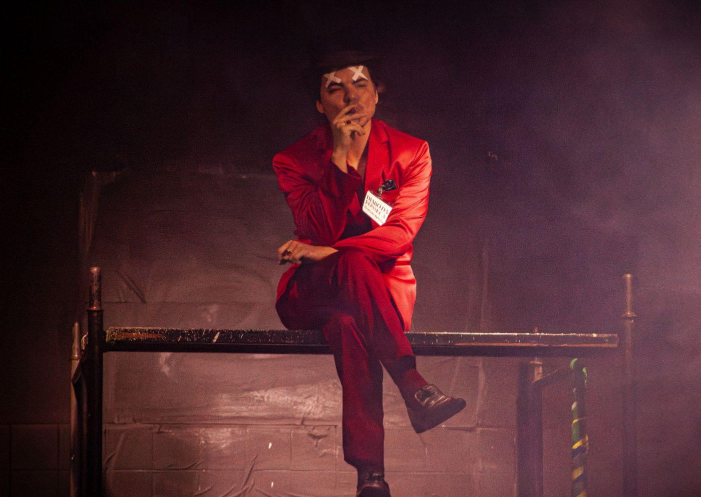

Nelson Baskerville lança olhar provocador e contemporâneo sobre a obra de Nelson Rodrigues em 17x Nelson – onde os canalhas pagam por seus crimes

Espetáculo reúne 18 jovens artistas em um desfile de 50 personagens e encerra trilogia iniciada em 2005
O diretor Nelson Baskerville volta a revisitar o universo de Nelson Rodrigues em 17x Nelson – onde os canalhas pagam por seus crimes, montagem que estreia em 1º de novembro no Espaço Barra, em São Paulo, com temporada até 30 de novembro, aos sábados (19h) e domingos (20h).
Com um olhar contemporâneo e provocador, Baskerville propõe uma nova leitura da obra do dramaturgo brasileiro, reunindo fragmentos das 17 peças escritas por Nelson Rodrigues em um mosaico de situações e personagens. No palco, 18 artistas interpretam 50 papéis, revelando as contradições humanas que tornaram o autor um dos nomes mais controversos e indispensáveis da dramaturgia nacional.
Um Nelson dentro do outro
17x Nelson é a terceira parte de uma trilogia iniciada por Baskerville em 2005 com O Inferno de Todos Nós (focada na família) e seguida por Se Não é Eterno, Não é Amor (centrada em amor e morte, em 2012). Agora, o diretor encerra o ciclo com um espetáculo sobre moralidade, desejo e punição, estruturado sob uma nova lógica narrativa.
“Ao contrário das montagens anteriores, aqui a ordem das peças não é cronológica”, explica Baskerville. “O espetáculo funciona como um grande desfile de personagens e situações, quase sem intervalos. A passagem de uma cena a outra é determinada pelo fluxo da encenação e pela energia do elenco.”
O diferencial desta montagem está na inversão de perspectiva: “Quase todas as cenas mostram os canalhas pagando por seus crimes”, afirma o diretor. “Não há inocentes — há falhas trágicas, e cada anti-herói enfrenta as consequências de seus atos.”
Nelson Rodrigues como espelho do Brasil
Para Baskerville, revisitar Nelson Rodrigues em 2025 é reafirmar sua urgência atemporal.
“Nos anos 40, Nelson já detectava esse tipo de brasileiro: racista sem parecer, homofóbico sem parecer, misógino sem parecer. Um país de máscaras. Em suas peças, ele faz essas máscaras caírem. E é esse olhar que propomos agora em 17x Nelson.”
O encenador traça um paralelo direto com o momento atual do país:
“Vivemos o fim de uma tragédia. Espero que, desta vez, os canalhas paguem por seus crimes.”
Ele também defende o estudo de Nelson Rodrigues como parte essencial da formação cultural brasileira:
“Assim como os ingleses têm Shakespeare e os franceses têm Molière, o ensino médio brasileiro deveria ter uma disciplina dedicada a Nelson Rodrigues. Só assim entenderíamos de verdade quem somos.”
Estética e encenação
O cenário, assinado pelo próprio Baskerville, é composto por estruturas móveis e metálicas, semelhantes a andaimes, que permitem mudanças rápidas de espaço e atmosfera. Os figurinos de Davi Parizotti mesclam elementos das décadas de 1940 a 1980 com traços contemporâneos, criando um visual que reflete o diálogo entre passado e presente.
A trilha sonora é tão híbrida quanto a obra de Nelson Rodrigues — vai da ópera ao eletrônico, passando pelo tango e pela música popular brasileira, numa fusão que acompanha o tom visceral da montagem.
Elenco e preparação
O elenco de 17x Nelson reúne nomes de diferentes trajetórias — artistas com experiência em teatro, audiovisual e performance. Essa multiplicidade, segundo o diretor, reforça a vitalidade da obra rodriguiana.
“Trabalhar com jovens intérpretes é uma forma de manter Nelson Rodrigues vivo. O papel do encenador, aqui, é abrir o olhar e a mente dessa nova geração para o que há de eterno em sua dramaturgia.”
A preparação artística foi conduzida por Brunna Martins, atriz e diretora formada pelo Célia Helena e pela SP Escola de Teatro, colaboradora constante de Baskerville em produções como A Médica (de Robert Icke) e Bonitinha, mas Ordinária.
Nelson Baskerville: um criador em permanente reinvenção
Formado pela EAD-USP, Nelson Baskerville é ator, diretor, autor e artista plástico. Vencedor do Prêmio Shell de Melhor Diretor por Luis Antonio-Gabriela (2011), também recebeu os prêmios APCA, CPT e Governador do Estado de São Paulo pelo mesmo espetáculo.
Entre suas montagens rodriguianas estão Os Sete Gatinhos (2012) e Otto Lara Resende ou Bonitinha, mas Ordinária (2025). No audiovisual, atuou em produções como Carcereiros, O Negócio, Maysa, Sintonia e Coisa Mais Linda.
“Explorar as complexidades da alma humana é o que torna Nelson Rodrigues obrigatório. Eu ainda o estudarei e encenarei até morrer”, declara Baskerville.
Sinopse
Com base nas 17 peças de Nelson Rodrigues, 17x Nelson – onde os canalhas pagam por seus crimes é uma imersão no universo moral e trágico do maior dramaturgo brasileiro. Sob direção de Nelson Baskerville, o espetáculo reúne 18 intérpretes que se revezam em 50 personagens — uma galeria de anti-heróis, pecadores e vítimas de si mesmos. Nesta montagem, os canalhas finalmente enfrentam as consequências de suas ações.
Serviço
Espetáculo: 17x Nelson – onde os canalhas pagam por seus crimes
Direção: Nelson Baskerville
Elenco: 18 artistas da AntiKatártiKa Teatral
Estreia: 1º de novembro de 2025
Temporada: Até 30 de novembro
Horários: Sábados, às 19h | Domingos, às 20h
Local: Espaço Barra – Rua Barra Funda, 519 – São Paulo/SP
Ingressos: R$ 60 (inteira) | R$ 30 (meia-entrada)
Vendas: Sympla
Duração: 120 minutos
Classificação: 18 anos
Lotação: 65 lugares